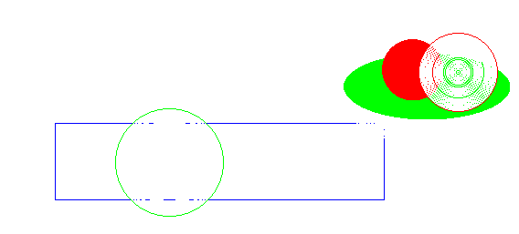
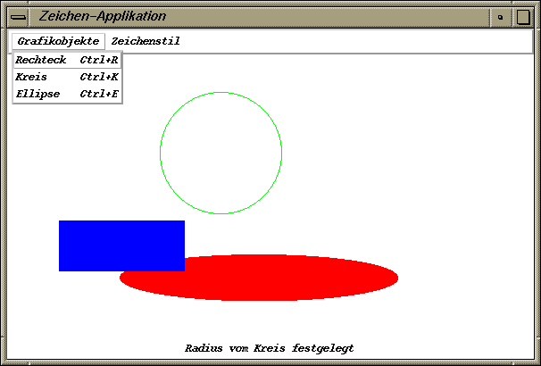
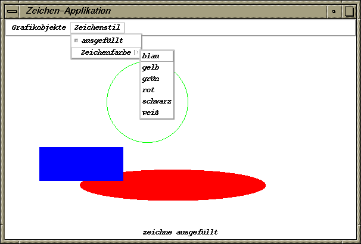

Das Übungsblatt besteht aus der Aufgabe 32 und der Teamaufgabe 33 mit jeweils 4 Punkten.
Schreiben Sie ein Java-Applet, das es erlaubt, umrahmte oder ausgefüllte Rechtecke, Kreise und Ellipsen in verschiedenen Farben zu zeichnen. In einer Statuszeile soll jeweils die momentane Zeichenaktion kurz beschrieben sein.
Die Auswahl des zu zeichnenden Grafikobjekts (Rechteck, Kreis oder Ellipse) soll durch Drücken eines Buttons erfolgen, der Zeichenstil (umrahmt oder ausgefüllt) soll durch eine CheckBox auswählbar sein. Die Bestimmung der Zeichenfarbe (blau, gelb, grün, rot, schwarz oder weiß) soll mit einem Choice-Objekt realisiert werden. Gezeichnet werden soll auf die Zeichenfläche eines Canvas-Objekts.
Verzichten Sie darauf, dass alle bisher gezeichneten Grafikobjekte erneuert werden, wenn das Applet teilweise überdeckt wird durch andere Fenster oder durch die Auswahl im Choice-Objekt bzw. durch sonstige Events zum Neuzeichnen aufgefordert wird. Dies ist nur mit dem Swing-Toolkit einfach zu erledigen und würde ein Ablegen aller bisher gezeichneten Grafikobjekte erfordern.
Vergleichen Sie zur Aufgabe folgendes Lösungsapplet mit XOR-Modus (vgl. Teil 3):
Vorgehen:
Legen Sie in einem ersten Schritt das passende Layout fest und erzeugen Sie alle benötigten GUI-Komponenten. Welche Events muss man abfangen durch welche Listener?
Versuchen Sie sich in einem 2. Schritt an dem endgültigen Zeichnen der Grafikobjekte.
Die 1. Ecke des Rechtecks soll durch Klicken der linken Maustaste und anschließendes Halten festgelegt werden, die 2. Ecke durch Loslassen der linken Maustaste nach der Mousebewegung.
Der Mittelpunkt des Kreises soll analog durch Klicken und anschließendes Halten der linken Maustaste festgelegt werden, der Radius soll dadurch bestimmt werden, dass beim Loslassen der linken Maustaste nach der Mousebewegung ein Randpunkt festgelegt wird (Kreis bläht sich vom Mittelpunkt aus auf).
Die Ellipse soll wie im Fall des Rechtecks festgelegt werden. Das umschließende Rechteck bestimmt hier den Rahmen der Ellipse (die Breite des Rechtecks also die eine Hauptachse, die Höhe des Rechtecks die andere).
2 Sonderpunkte:
Versuchen Sie in einem 3. Schritt, auch den momentanen Umriss des
Grafikobjekts während der gedrückten linken Mousetaste zu
zeichnen (nur den Rahmen, auch im Fall, dass endgültig das Grafikobjekt
ausgefüllt gezeichnet werden soll).
Die Idee sollte hierbei sein, sich auch den alten Umriss des jeweiligen Grafikobjekts zu merken (Speichern der bestimmenden Datenelemente) und den alten Umriss in der Hintergrundfarbe zu zeichnen (also zu löschen). Danach sollte der neue Umriss in der aktuellen Zeichenfarbe gezeichnet werden.
Um hässliches Löschen und temporäre Restzeichnungen während des Zeichnens des momentanen Umrisses bei Überlagerung von Grafikobjekten zu vermeiden wie im folgendem Bild,
kann man den Zeichenmodus zeitweise auf XOR-Modus einstellen. So stellen z.B. die folgenden Anweisungen
g.setColor(Color.red); // aktuelle Zeichenfarbe
g.setXORMode(getBackground()); // XOR-Modus mit Hintergrundfarbe
...
// g.setPaintMode(); // Zurueckstellen auf normalen Paint-Modus
in einer paint()-Methode mit einem Graphics-Objekt
g die aktuelle Zeichenfarbe auf rot ein und aktivieren den
XOR-Modus. Zeichnet man jetzt im XOR-Modus über rote Pixel ein 2. Mal
mit der Zeichenfarbe rot, werden die Pixel in der Hintergrundfarbe
(und nicht in rot!) dargestellt (also gelöscht).
Zeichnet man über Pixel in der
Hintergrundfarbe im XOR-Modus, werden die Pixel in rot dargestellt. Dies
vermeidet die oben beschriebenen unerwünschten Effekte.
Abzugeben sind der Java-Sourcecode und der Java-Bytecode des Applets sowie das zugehörige HTML-File.
Schreiben Sie eine Java-Applikation, die für die Aufgabe 32 die Auswahl der Grafikobjekte, des Zeichenstils und der Zeichenfarbe mit Menüs in einer Menüleiste gestaltet. Verzichten Sie für diese Aufgabe auf den 2. und 3. Teil (Zeichnen der Objekte bzw. den Aufgabenteil für die Sonderpunkte).
Ein Anlegen einer Menüleiste kann nur für ein Frame-Objekt erfolgen durch die Methode setMenuBar(). Zu einer Menüleiste werden durch die Methode add() Menüs hinzugefügt, in Java Objekte der Klasse Menu. Für diese Aufgabe soll es ein Menü namens "Grafikobjekte" und eines namens "Zeichenstil" geben.
Das erste soll als Menü(auswahl)punkte (in Java z.B. Objekte der Klasse MenuItem) die Formen Rechteck, Kreis und Ellipse anbieten.
Das zweite Menü soll als Menü(auswahl)punkte eine Checkbox besitzen für die Entscheidung umrahmt/ausgefüllt (in Java ein Objekt der Klasse CheckboxMenuItem) sowie ein Untermenü namens "Zeichenfarbe" (in Java wieder ein Objekt der Klasse Menu) zur Auswahl der Zeichenfarbe.
Die Menü(auswahl)punkte, die Checkbox sowie das Untermenü werden an das Menü durch die Methode add() angehängt.
Um auf die Auswahl der Menüpunkte zu reagieren, muss man für alle Menü(auswahl)punkte einen ActionListener implementieren, die Anwahl der Checkbox im Menü muss mit einem ItemListener beobachtet werden. Die Selektion der Menüs selbst kann man nicht so einfach im JDK 1.1 beobachten. Es soll statt der Aktionen in Aufgabe 32 einfach nur die durchzuführende Aktion ausgegeben und in der Statuszeile angezeigt werden. Implementieren Sie auch einen WindowListener, der das Schließen des Frames erlaubt.
2 Sonderpunkte:
Versuchen Sie, für Menü(auswahl)punkte auch Shortcuts zu
definieren, also Tastaturabkürzungen. Dies erfolgt durch Objekte
der Klasse MenuShortcut, die man beim Konstruktoraufruf von
Objekten der Klasse MenuItem hinzufügen kann. Erzeugt man
Objekte der Klasse MenuShortcut, muss man den Tastaturcode als
int-Wert spezifizieren, also entweder einfach den char-Wert
'g' oder die Konstante KeyEvent.VK_G, um mit
Ctrl + g (bzw. Strg + g) den Unterpunkt zu aktivieren.
Den Rest macht die JVM alleine ... .
Mir ist es nicht gelungen, ein Untermenü bzw. das Menü selbst mit solchen Shortcuts zu selektieren. Wer findet eine Lösung? Kann man auch die Checkbox mit einer Tastaturabkürzung belegen?
Abzugeben sind der Java-Sourcecode und der Java-Bytecode der Applikation.